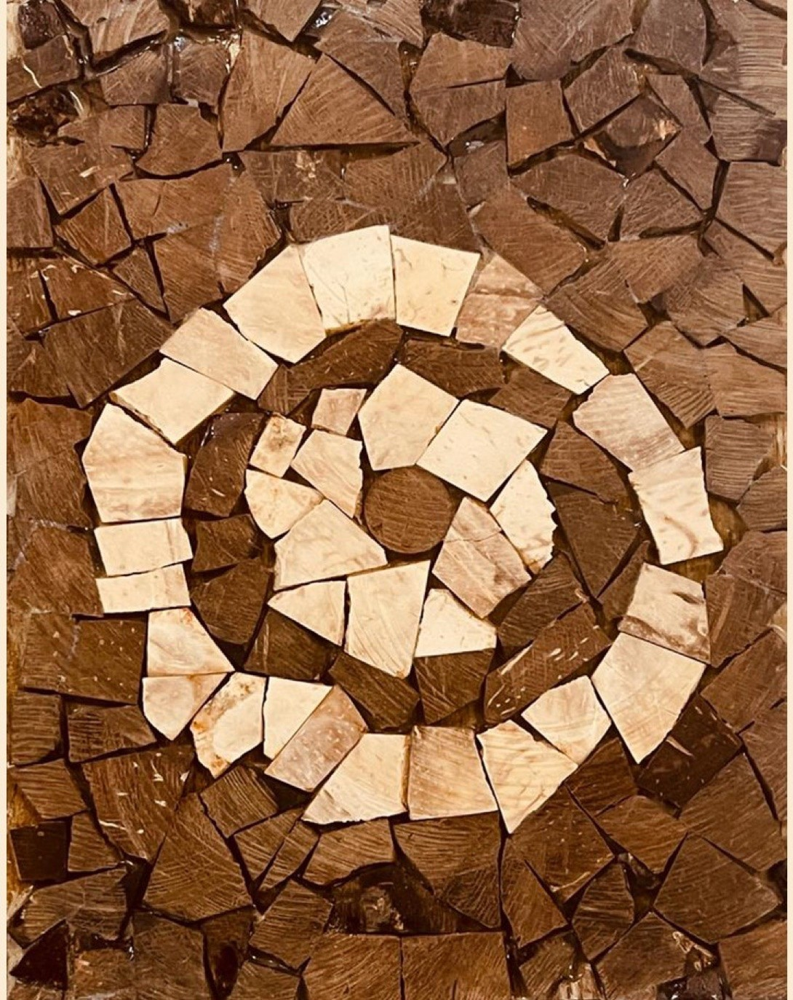
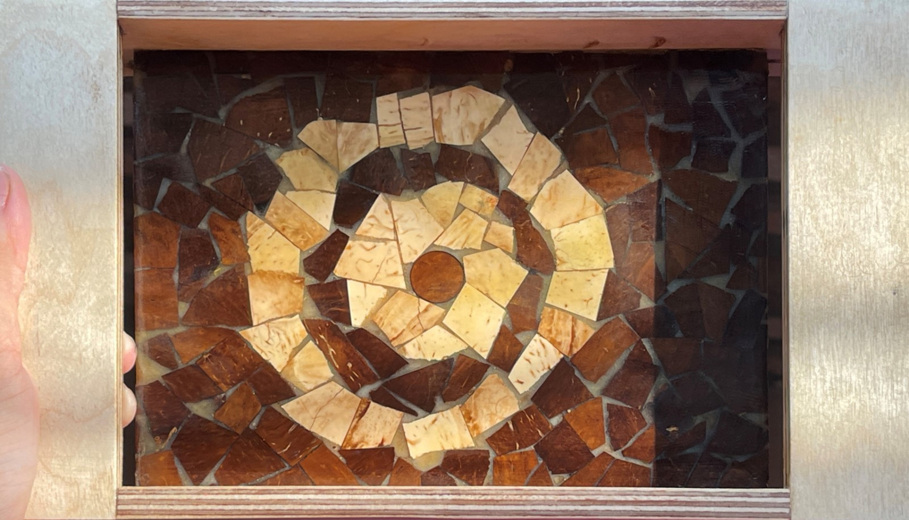
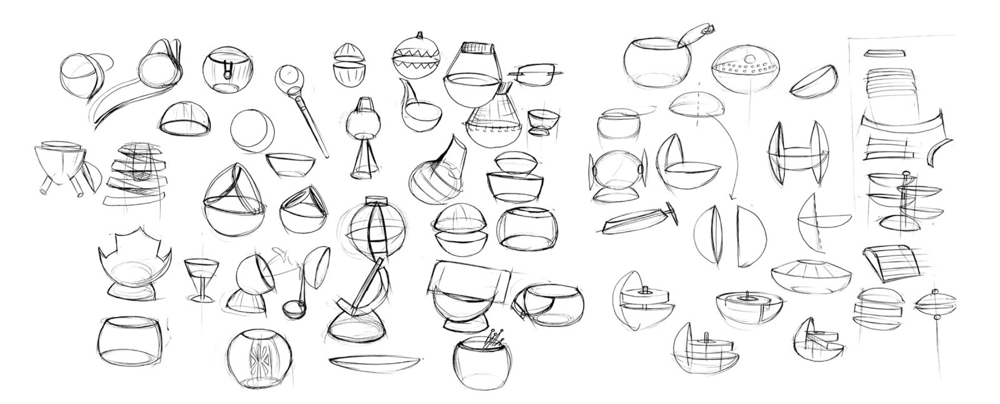
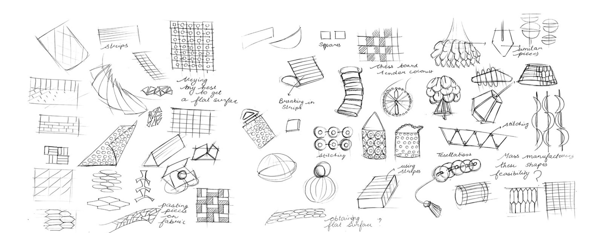
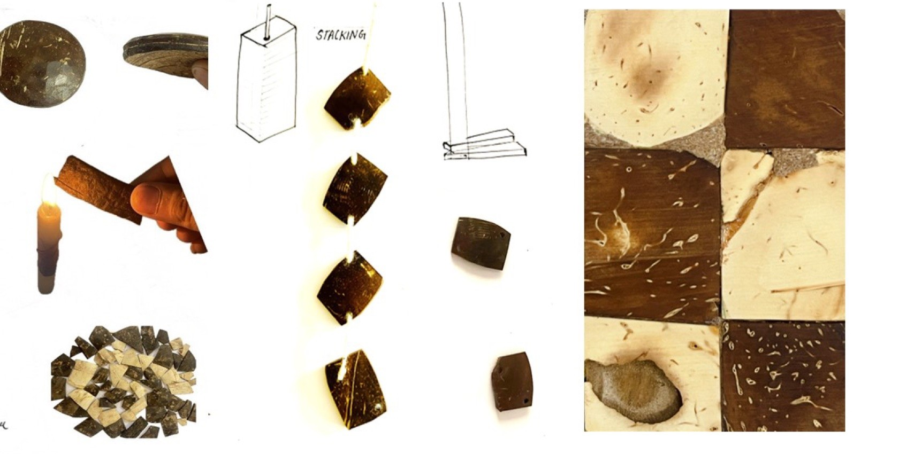
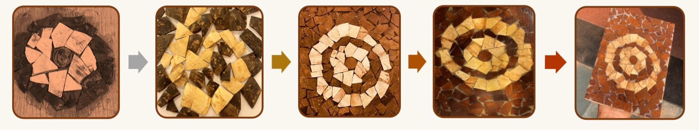
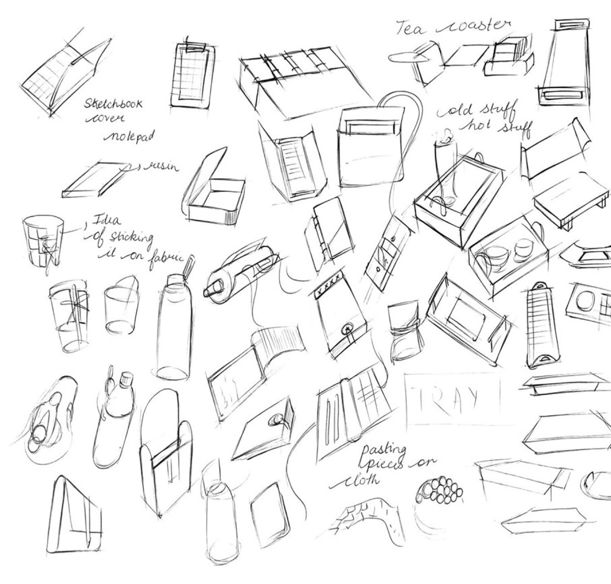
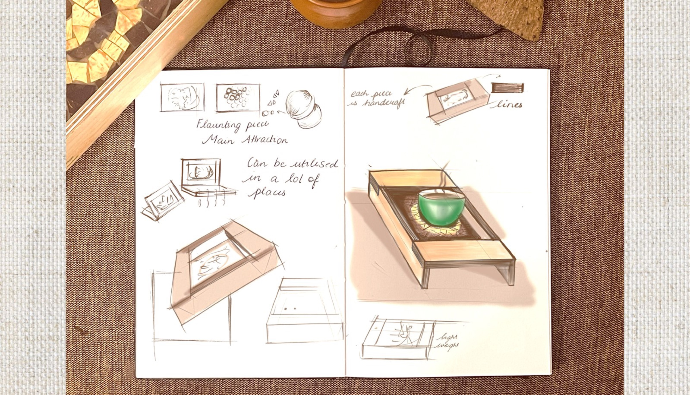
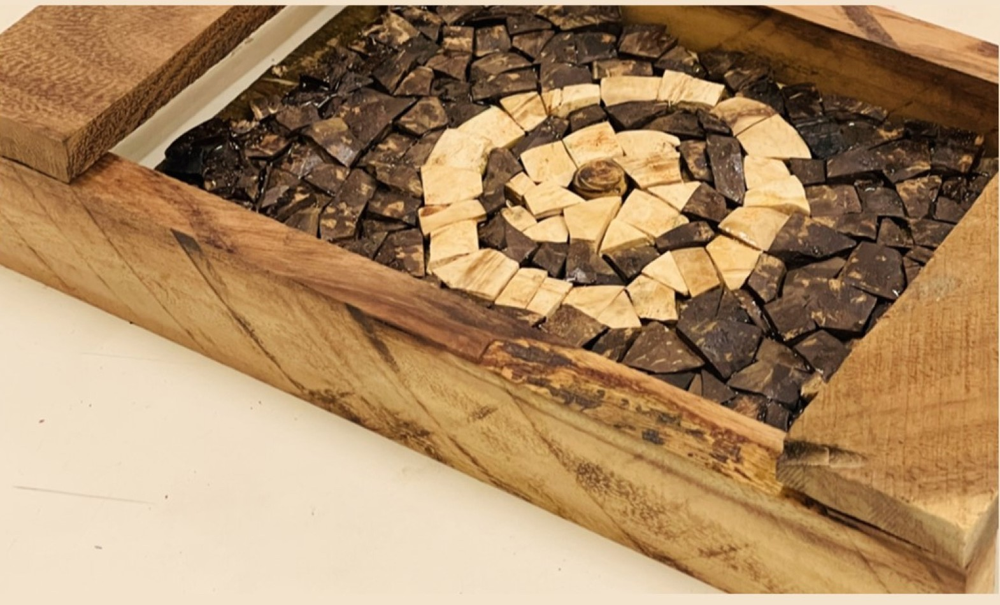
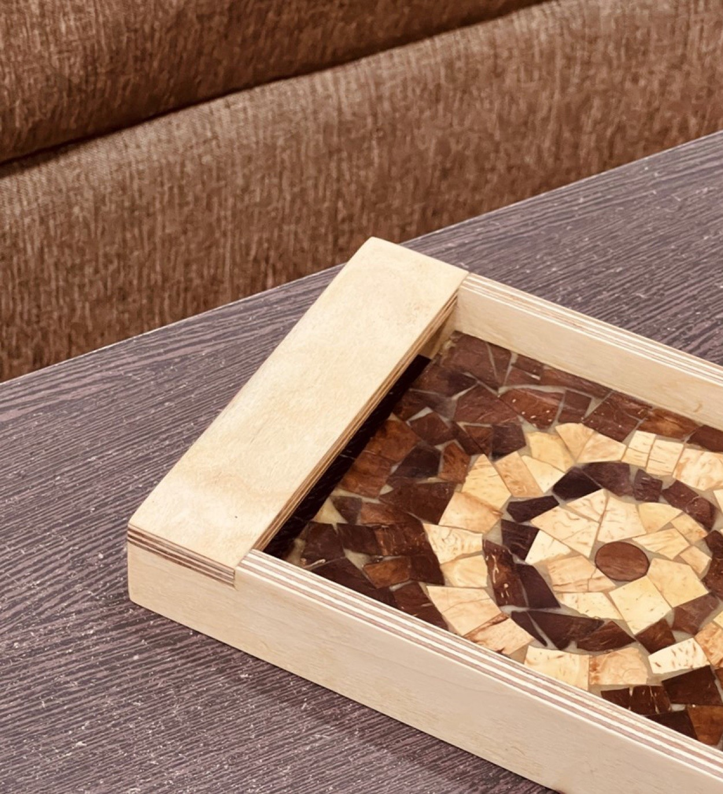

Materials and processes
A souvenir for NID Andhra Pradesh: upcycled coconut shell, broken into a mosaic and set into a birch plywood tray.
Design a souvenir for NID AP under the theme LiFE, Lifestyle for Environment: in its aesthetics, its material, its function, or all of them.
I chose coconut shell. Upcycling it reduces waste and supports the artisans who work with it.


At first I tried to keep the round form of the coconut. But a coconut is never the same size twice, and it always breaks.
So I broke it on purpose, into units that could be repeated.


Can coconut shell be layered, bent, stacked, powdered or stitched? How brittle is it? I tested each before deciding what to make.

I sanded the broken pieces smaller, glued them by hand, levelled the surface with a router on a jig I made, filled the gaps with Araldite and sanded it smooth.

Broken pieces sanded smaller and set one by one.
A router on a jig I built gives a perfectly flat surface.
Araldite in the gaps.
Sanded with sandpaper and the router.
The surface could go on many products. I chose a tray so I could practise joinery.
Birch plywood is thin, light and easy to cut, route and engrave, and it wastes little.


No two trays are the same. The mosaic can never be copied exactly, which is what makes it a souvenir.

